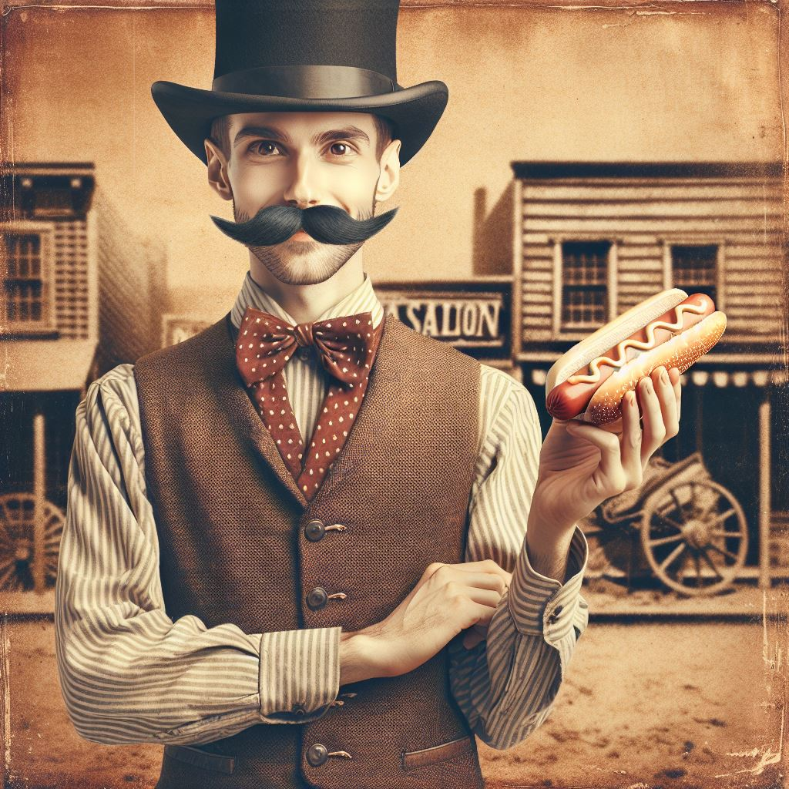

The History of Hotdogs
Hotdogs have a rich and flavorful history, dating back to the 19th century. Originating from German sausages, the hotdog became an American classic at ballparks and street stands. At Simons Hotdogs, we honor this tradition while adding our own creative twist to every dog we serve!
